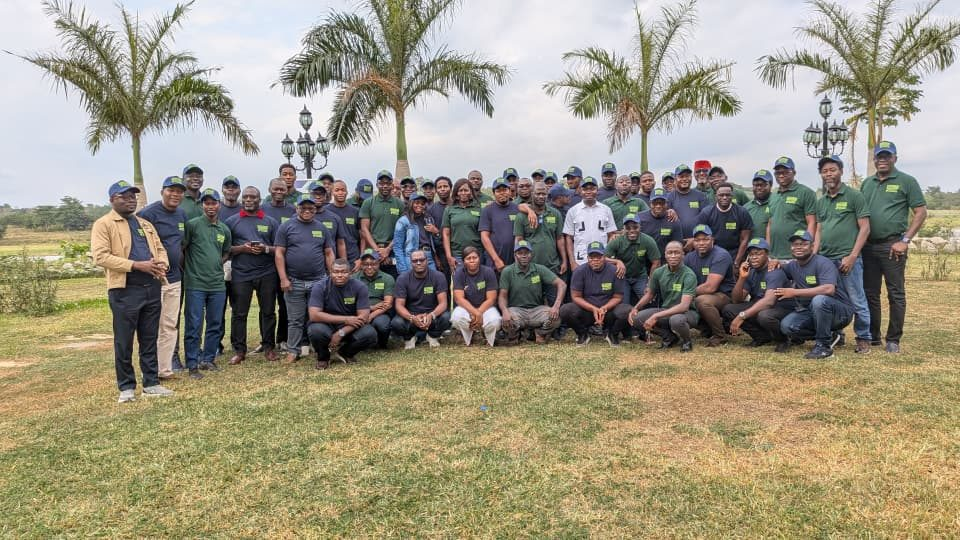
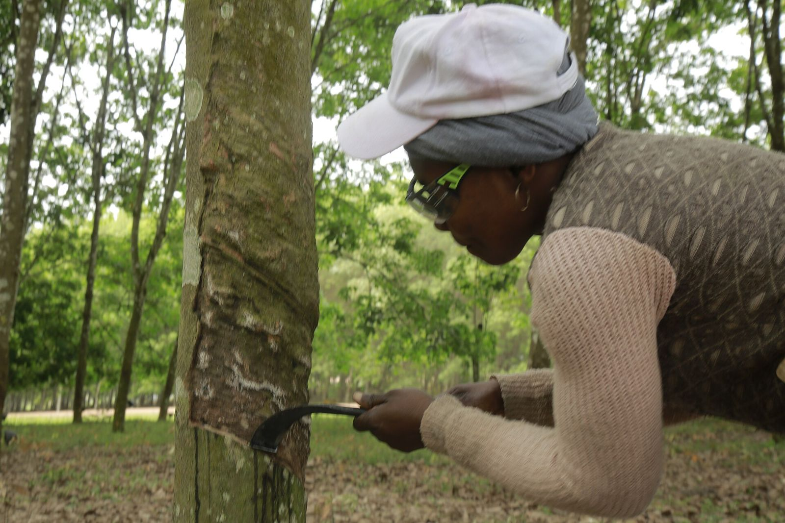

Promotionnelle · 3 min 34 · voix masculine
Rentreront-ils entiers ce soir ?
Document unique, permis de travail, comité de sécurité : trois preuves concrètes d'un système SST réel.
GEC-CI vous aide à construire un système de santé et sécurité au travail qui protège réellement vos travailleurs, respecte la loi ivoirienne et peut être présenté à un organisme certificateur accrédité selon ISO 45001:2018, quand vous et l'auditeur le jugerez prêt.
Dangers et risques, participation des travailleurs, contrôles opérationnels, urgences, incidents et performance SST. Nous vendons un système qui fonctionne et se prouve, pas une promesse de date.

ISO 45001 exige la participation et la consultation des travailleurs non cadres, et pas seulement de l'encadrement ; l'auditeur interroge les opérateurs.
Supprimer, remplacer, protéger collectivement, organiser, puis seulement équiper : distribuer des EPI ne suffit jamais.
Il faut identifier les dangers de toutes les activités, y compris maintenance, nettoyage, urgences et sous-traitants.
Prestataires, transporteurs et journaliers doivent être coordonnés par un plan de prévention et un accueil sécurité.
Toute nouvelle machine, tout nouveau produit ou organisation est analysé avant le démarrage.
Les travailleurs doivent pouvoir se retirer d'un danger grave et imminent sans sanction, ce que prévoit aussi le décret n° 2020-956.
Un accident grave coûte un arrêt de ligne, une enquête, un travailleur absent et parfois un client perdu. Les premières mesures (consignation, rangement, accueil) coûtent surtout du temps et de l'organisation.
Peu d'accidents déclarés ne veut pas dire peu de dangers. Comptez les presque-accidents et regardez les journaliers : c'est souvent là que se cachent les vrais chiffres.
Si l'EPI est inadapté à la chaleur ou mal expliqué, il ne sera pas porté. ISO 45001 demande d'abord de réduire le danger à la source, puis de choisir les EPI avec les travailleurs.
Le comité est une obligation légale au-delà de 50 salariés et un lieu où les problèmes remontent avant de devenir des accidents ou des conflits.
Le référentiel agricole couvre une partie de la SST dans les exploitations. ISO 45001 organise toute l'entreprise (usine, magasin, transport, sous-traitants) dans un système complet et auditable.
Non. Le système doit fonctionner et produire des preuves, et seul l'organisme certificateur accrédité décide. Nous vous disons honnêtement où vous en êtes à chaque étape.
Voix off française, musique, texte affiché à l'écran : à partager avec votre conseil d'administration et vos équipes. Toutes les vidéos GEC-CI PRO
Document unique, permis de travail, comité de sécurité : trois preuves concrètes d'un système SST réel.
ISO 45001:2018 + Amd 1:2024, hiérarchie des mesures, participation des travailleurs et obligations ivoiriennes.
Ce que demandent déjà RA, Fairtrade et RSPO, ce qu'ajoute ISO 45001, et le système intégré.
Une coopérative de Soubré et une usine d'Abidjan pas à pas ; la plateforme et nos engagements.

Les mêmes coupures, chutes et écrasements reviennent parce que personne ne cherche les vraies causes.
Comité SST non constitué, registres absents, bilan annuel jamais transmis : l'entreprise est exposée.
Transporteurs, journaliers et équipes de maintenance travaillent sur le site sans consignes ni plan de prévention.
Les clients internationaux et les référentiels agricoles demandent des preuves SST que l'entreprise ne sait pas produire.
La même méthode que pour nos filières agricoles ; seul le référentiel change. La décision de certifier appartient à l'organisme certificateur accrédité.
Structure et numérotation de l'édition en vigueur ISO 45001:2018 + Amendement 1:2024 (action climatique). La révision (DIS diffusé en juin 2026, publication attendue en 2027) n'est pas publiée : les évolutions annoncées figurent dans le champ « nouveau » avec « confirmer »: true.
Reformulation GEC-CI. Le texte officiel de la norme, acheté auprès de l'ISO ou de CODINORM, fait foi. Risque : niveau d'écart le plus fréquent en Côte d'Ivoire, selon GEC-CI. 13 article(s) portent la mention « À CONFIRMER AUPRÈS DE L'ORGANISME COMPÉTENT AVANT MISE EN ŒUVRE OU AUDIT ».
Répondez honnêtement : rien n'est enregistré ni envoyé. Le résultat donne vos priorités ; il ne remplace pas le diagnostic sur place.

Pulvérisation, machettes, transport en camion et magasin de stockage, souvent déjà certifiée RA ou Fairtrade.

Machines, poussières, bruit, chaleur, chariots et beaucoup de journaliers.

Chariots élévateurs, camions, gerbage de sacs, manutention manuelle et fumigation.

Travail en hauteur, tranchées, engins, sous-traitance en cascade.

Risques routiers, électriques, ergonomiques et psychosociaux souvent ignorés.
Personnages : illustrations créées pour GEC-CI, ils ne représentent pas des personnes réelles.
Facture normalisée électronique pour chaque étape, sur procès-verbal de livraison. Le prix se calcule après le diagnostic, lot par lot. Aucun paiement n'est conditionné à l'obtention du certificat : l'organisme certificateur accrédité décide seul.
Vos données restent à vous : elles sont hébergées dans votre espace et vous sont restituées en fin de contrat.
40 articles, preuves codées, registres, analyse d'écarts, indicateurs, manuel intégré et passerelle IA GECI ; base de données en ligne sécurisée.
Ouvrir la plateformeManuel opérationnel : procédures, registres codifiés, check-lists et points à confirmer. Intégré à la plateforme, aussi en PDF ci-dessous.
Lire dans la plateformeSensibilisation des dirigeants, formation du responsable du système, auditeurs internes et personnel de terrain.
Demander une sessionLe système de gestion du cabinet : clients, contrats, missions, preuves, validations humaines, incidents, facturation et journal d'audit. Un seul compte pour toutes les plateformes GEC-CI ; droits vérifiés par le serveur.
Ouvrir IA GECI
GEC-CI est dirigé par Mr SIDIBE ABDOULAYE, Président-Directeur Général, ATN RA et formateur-auditeur ISO 9001, 14001 et 45001. La direction suit chaque mission jusqu'à la décision écrite.


Portraits de bureau : décors mis en scène numériquement.
| Premier contact | Réponse le jour même, rendez-vous sous 7 jours |
| Diagnostic | Rapport sous 10 jours ouvrés après la visite |
| Vos questions | Réponse sous 48 heures ouvrées |
| Comité de pilotage | Chaque mois, compte rendu sous 5 jours ouvrés |
| Données transmises | Retour écrit sous 5 jours ouvrés |
| Audit blanc | Rapport sous 7 jours ouvrés |
Avec les 40 articles de la norme. Vous repartez avec vos trois priorités.
+225 05 55 49 45 94WhatsApp+225 07 57 88 13 49